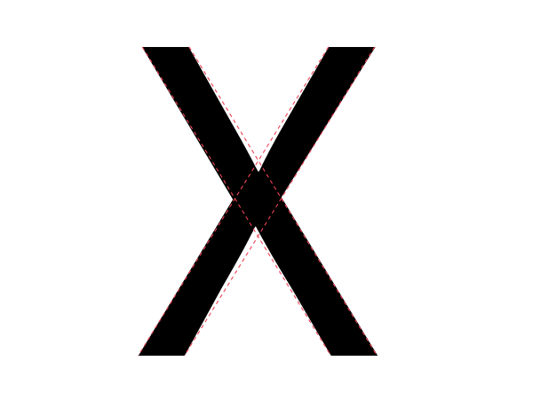
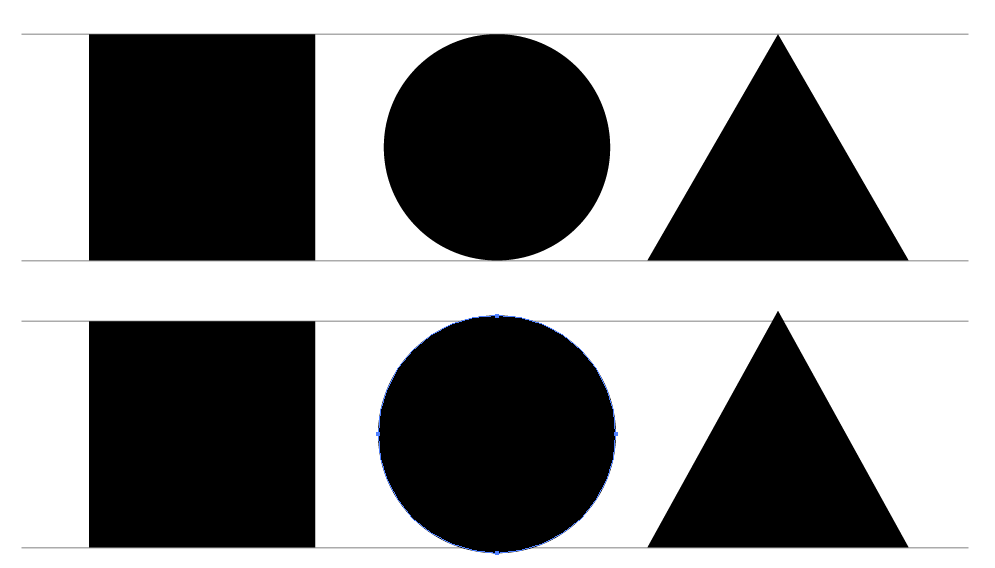

Доверять Своим Глазам
Дизайн шрифта — процесс итеративного тестирования отдельных вариантов, которые в совокупности составляют законченный дизайн. Тестировать шрифт, чтобы увидеть, является ли комбинация принятых решений:
- Позволяет читать шрифт
- Шрифт кажется подходящим
- Делает шрифт полезным для задач, которые задача, чтобы шрифт мог выполнять.
Тестируя дизайн, придется в некоторой степени доверять восприятию и дизайну на практике. Большая часть шрифтового дизайна требует, чтобы буквы были похожими и повторялись формы.
Заманчиво предположить, что если измерить детали и промежутки между глифами, то получить достоверные результаты. Хотя этот подход очень полезен, имеет реальные ограничения. Готовность внести изменения, если что-то покажется неправильным. Более того, быть увереным, что внесение изменений до “looks right” — это правильно.
Причина, по которой это правда, заключается в том, что существует ряд естественных оптических иллюзий, которым подвержены все читатели. Эти иллюзии необходимо объяснить, изменяя формы букв до тех пор, пока они не станут подходить.
Можно понять, где искать и какие элементы настроить в этих Видео-обзор типа.
Примеры illusions
Некоторые иллюзии связаны с восприятием веса линий, некоторые — с воспринимаемой длиной линий, а третьи — с восприятием форм глазом.
Горизонтальный и вертикальный вес
В примере слева показан ‘H’ со стеблями одинаковой толщины. Выглядит неправильно. Можно почувствовать это?
Другой справа имеет горизонтальную полосу, которая была утончена, чтобы казаться одинаковой по толщине.

Глифы, в которых необходимо выполнить оптическую настройку, многочисленны и включают в себя: A, E, F, L, H, f, t, и z.
Толщина диагонали
Аналогично, если есть полосы одинаковой ширины и одна из них установлена по диагонали, диагональная полоса будет казаться немного тяжелее вертикальной и немного тоньше горизонтальной. Если задача, чтобы оно выглядело правильно, придется сделать его светлее, как в горизонтальном примере, но чуть меньше.

Глифы, в которых может иметь значение это человеческое восприятие, довольно многочисленны, но включают в себя k, K, N, Q, R, v, V, w, W, x, X, y, Y, 7, 2, &, ł, Ł, ø, Ø, √, ∕, ‹, ›,«, », ½, ⅓, ¼, ≤, ≥, и ×.
Длина и воспринимаемый диагональный угол
Более длинные формы должны иметь меньший наклон, чем короткие, чтобы создать видимость того же наклона.
На изображении ниже есть диагональные линии, расположенные под одним углом. Длинный, кажется, находится под другим углом.

На следующем рисунке ниже наклон более длинной линии был отрегулирован:

Теперь посмотреть на настоящий курсив, применив эти исправления к глифам:

Пересечение диагоналей
Когда полоса пересекает другую диагональ или прямую линию, ее необходимо отрегулировать, чтобы она не выглядела смещенной.

В приведенном выше примере X слева имеет две пересекающиеся нескорректированные полосы. Пример справа был скорректирован так, чтобы они выглядели выровненными.

Как можно увидеть на этом X с пунктирной линией сверху, X, который выглядит визуально выровненным, имеет смещение.
Глифы, к которым относится эта иллюзия, включают: x, X, k, K, ×, #, и Icelandic буквы ‘eth’ (ð).
Воспринимаемая высота
Форма глифа влияет на то, какой высоты он должен быть, чтобы выглядеть так, как будто имеется та же высота, что и других глифов. Круглые глифы должны немного превышать высоту плоских глифов. Глифам более заостренной формы потребуется больше выходить за пределы. Чем острее форма, тем больше ей придется вылетать, чтобы выглядеть правильно.

На изображении выше три верхние фигуры не настроены, то есть имеют одинаковую высоту. Три фигуры внизу были скорректированы так, чтобы они выглядели более похожими по высоте.
Иллюзия актуальна для любого глифа, у которого есть округлые или заостренные части. К ним относятся O, Q, C, S, A, V, W, и так далее.
Реальная способность исправить эти иллюзии.
Поскольку можно видеть и иллюзию, и эффект исправления иллюзии, внести эти исправления самостоятельно. Остается только доверять впечатлениям.
Тест на целеустремленность
Точно так же, как можно видеть оптические иллюзии и исправлять их, также есть возможность определить, подходит ли шрифт для конкретного использования (или применений), которое, возможно, имеется в виду. Здесь также следует доверять своему суждению.
Совершенно отдельно стоит отметить, что ни один шрифт нельзя оценить отдельно от того, как используется и для чего. Вот почему так важно начинать тестирование с самого начала процесса проектирования и продолжать тестирование до тех пор, пока не почувствовать, что проект завершен.
Какими будут эти испытания? Поначалу тесты будут простыми, что позволит протестировать первые варианты дизайна. По мере того как проект становится более полным, тесты должны будут идти в ногу со временем и позволять оценивать относительный успех или неудачу новейших решений, которые сделать, или, что еще лучше, сравнивать два (или три, или more…) варианта, которые рассматриваются.
Иногда обнаружить, что нужно вернуться назад и изменить вариант дизайна, который, по мнению, уже работал хорошо. Это нормально. Создание шрифта требует балансировки многих переменных, и часто случаются сюрпризы. Чем больше разрабатывать шрифты, тем больше будет опыта в принятии произвольных решений.
Когда процесс приближается к концу, если шрифт должен использоваться простым способом, тесты также должны оставаться простыми. Однако, если шрифт будет использоваться разными способами или в широком диапазоне условий печати или экрана, его следует протестировать во всем этом диапазоне ситуаций, включая печать различных образцов шрифта.
Это может сэкономить время на проектирование и иметь четкое представление о конечном использовании, которое задача использовать. Однако это не всегда возможно, и идеи могут развиваться. Главное — продумать и определить варианты использования настолько полно, насколько это возможно, а затем убедиться, что тесты соответствуют вопросам, которые задаются при разработке шрифта.